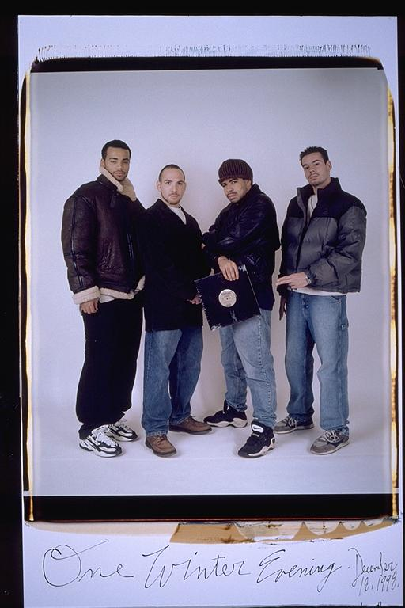

Casey: This picture is definitely symbolic. I can't believe how fat I was. Also it is a testament to my proudest achievements: my friends and my record. I was so happy to have a record out, it was always my dream to put out a record. Even though this record didn't do as well as I would have liked it to. Without it, I would have never put out my second record which did well, I was even more proud of and the others I will put out. Even if no one ever buys another one of my records this picture will always remind me how I had the heart to chase my dreams.
